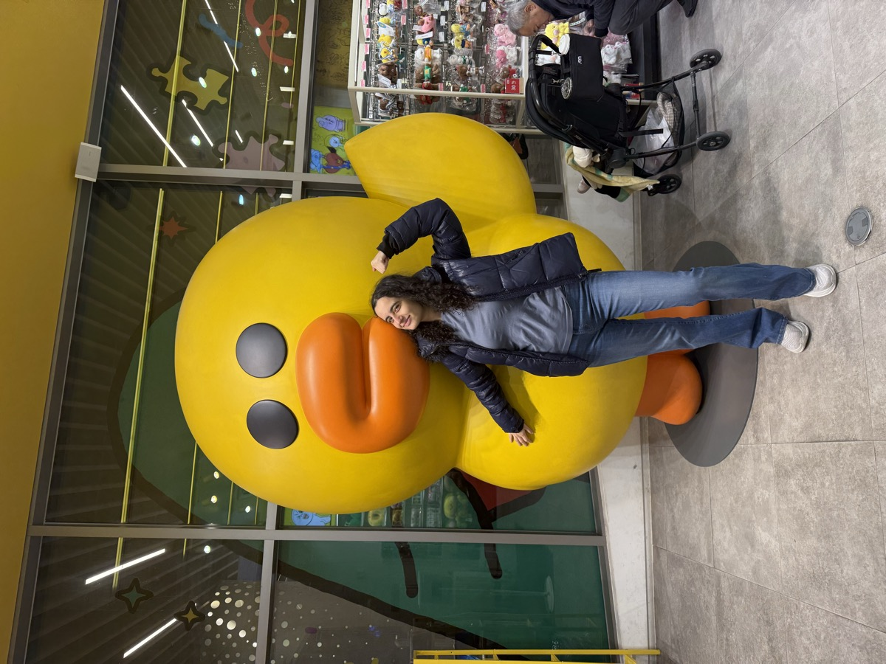
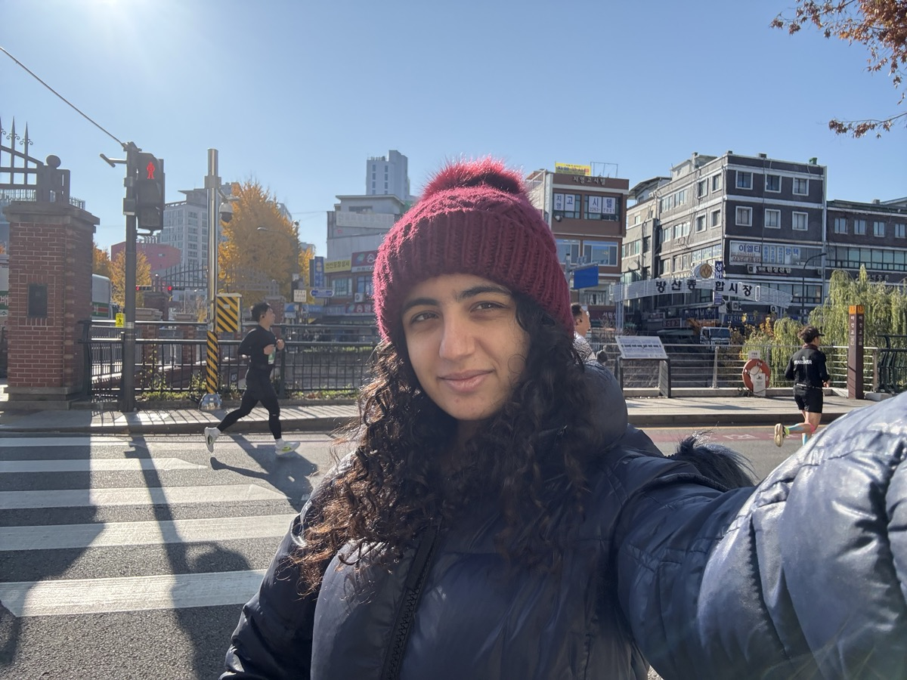

ICML 2026
Papers presented by Jessica Chudnovsky at ICML 2026
Papers
Yegor Denisov-Blanch*, Joshua Kazdan*, Jessica Chudnovsky, Rylan Schaeffer, Sheng Guan, Soji Adeshina, Sanmi Koyejo
Thu, Jul 9, 2026 · 5:00 PM – 6:45 PM KST · Hall A #1614
Joshua Kazdan*, Noam Levi*, Rylan Schaeffer, Jessica Chudnovsky, Abhay Puri, Bo He, Mehmet Donmez, Sanmi Koyejo, David Donoho
Accepted at:
- The Impact of Memorization on Trustworthy Foundation Models (MemFM)
- Structured Probabilistic Inference & Generative Modeling (SPIGM)
- Foundations of Deep Generative Models: Understanding Memorization, Generalization, and Reasoning (FoGen)
- Combining Theory and Benchmarks: Towards a Virtuous Cycle to Understand and Guarantee Foundation Model Performance (CTB)
Jessica Chudnovsky*, Joshua Kazdan*, Noam Levi*, Rylan Schaeffer, Yegor Denisov-Blanch, Bo He, Mehmet Donmez, Sanmi Koyejo, David Donoho
Oral at FoGen: Foundations of Deep Generative Models workshop · 11:15 – 11:30 AM KST · Room 318
FoGen Best Paper Runner-up Award · Award ceremony: 4:50 – 5:00 PM KST, July 10 · Room 318
Also accepted at:
- The Second Workshop on the Impact of Memorization on Trustworthy Foundation Models at ICML
- Structured Probabilistic Inference & Generative Modeling
- Combining Theory and Benchmarks: Towards a Virtuous Cycle to Understand and Guarantee Foundation Model Performance
- High-dimensional Learning Dynamics


Images taken from my last time in Seoul to denote my enthusiasm for ICML 2026 taking place in Seoul.